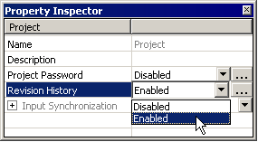
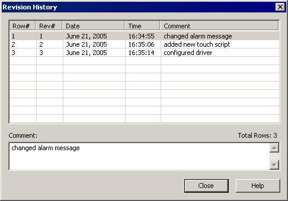
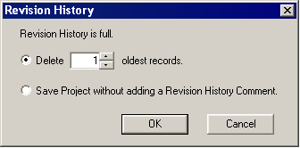

|
|
|
|
|
|
|
|
Revision History enables you to track the changes you make to your projects during their development. With Revision History enabled, you can add comments to the Revision History each time you save the project. Comments are stored in a Revision History record along with the following information:
Revision Number: Revision number increments by one each time the project is saved. When the project is created the revision number is set to 1.
Date: Month, Day, and Year the project was saved.
Time: Hour, Minute, and Second the project was saved.
Comment: Notes the developer added when the project was saved.

If you save a project without adding a Revision History comment, a record is not created in the Revision History; however, the revision number still increments by one each time you save the project.
See the sections below for information on:
Adding Revision History Comments
Right-click the project node and click Properties.
In the Project node's properties, select Enabled from the Revision History field's drop-down list.

You can add Revision History Comments each time you save your project with Revision History enabled. When you save, the save dialog box will have a text box that you can type comments into. Type in a comment and click Yes to save the project and to add the comment, revision number, and the date and time to the Revision History. Comments have a maximum length of 256 characters.
In the Navigator tab, right-click the project node and click Properties.
In the Project node's properties, click the Revision History ellipsis button to display the Revision History dialog box.

When a project's Revision History becomes full, Vijeo-Designer prompts the user with a dialog box that requires the user to either delete old Revision History records or save the project without adding a comment. Either delete some of the oldest records, or save the project without adding a comment. Revision History can hold a maximum of 2000 records.
